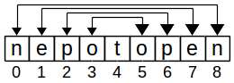
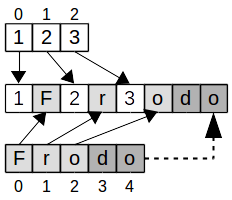
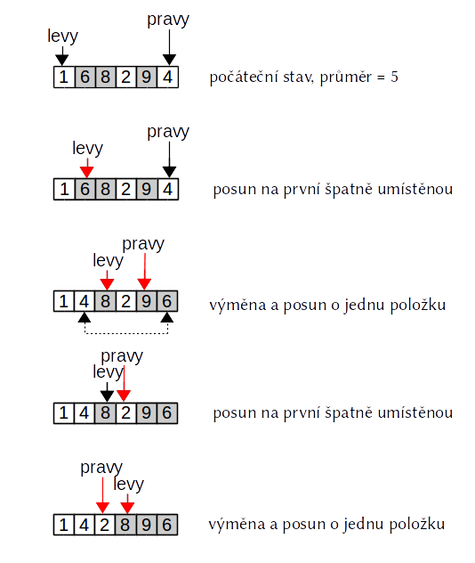

Python má relativně omezený počet složených programových konstrukcí (tj. konstrukcí spojujících více příkazů). Kromě větvení (příkaz if) jsou to i cykly. Cykly umožňují vícenásobné provádění bloku příkazů.
Hlavním cyklem jazyka Python je cyklus for. Cyklus for prochází (konečnou) posloupnost objektů, na každý z nich postupně přesměruje tzv. řídící proměnou a následně vykoná (odsazený) blok příkazů tzv. tělo cyklu.
range¶for i in range(5): # hlavička cyklu
print(i) # tělo cyklu
Tento cyklus postupně prochází posloupnost čísel, jež je generována vestavěnou funkcí range. Je to posloupnost čísel 0, 1, 2 až 4 (tj.$n-1$ kde $n$ je jediným parametrem funkce). To že, posloupnost začíná nulou a končí hodnotou $n-1$ souvisí s indexací (předaná hodnota je horní mez a ta v Pythonu není nikdy zahrnuta do generovaného rozsahu).
Při prvním průchodu řídící proměnná i odkazuje první hodnotu posloupnosti tj. hodnotu nula. S touto hodnotou se poprvé provede tělo cyklu tj. do výstupu se vypíše hodnota 0 (a výstup se odřádkuje). Tím první průchod končí.
Při druhém průchodu řídící proměnná i odkazuje druhou hodnotu posloupnosti tj. hodnotu jedna. S touto hodnotou se podruhé provede tělo cyklu tj. do výstupu se vypíše hodnota 1 (a výstup se odřádkuje). Tím druhý průchod končí.
To se opakuje i pro třetí (i=2), čtvrtý (i=3) a pátý již poslední průchod (i=4). Výsledkem provedené je tak výpis čísel 0,1,2,3,4 do výstupu (přičemž každé číslo je na zvláštním řádku).
Poznámka: Řídící proměnná cyklu může mít zcela libovolné (přípustné) jméno. V případě cyklů přes celočíselné rozsahy se však téměř vždy používá identifikátor i (resp. pokud je již užíván pak j nebo k). Tento úzus vychází z podobného úzu v matematice.
Předchozí cyklus jednoduchý a názorný, ale v praxi nepříliš užitečný. Stejně tak neužitečný je příklad následující příklad, který ukazuje, že tělo cyklu nemusí řídící proměnou (zde pojmenovanou j):
for j in range(10):
print("Python je prostě boží")
Tento cyklus 10× vypíše řetězec "Python je prostě boží". Při větším počtu výstupních řádků Jupyter naštěstí pozná, že výstup bude extrémně dlouhý a vytvoří tak skrolovatelný výstup, který lze posuvat pomocí posuvníku vpravo (vyzkoušejte)
Nyní přejdeme ke (zdánlivě) užitečnějšímu příkladu.
n = int(input("Celé číslo:"))
suma = 0
for i in range(1, n+1):
suma += i
print(suma)
Tento program počítá součet všech celých čísel od 1 do $n$ (včetně), kde $n$ je čteno ze standardního vstupu. Implementace je přímočará. Nejdříve si připravíme proměnou do níž budeme ukládat jednotlivé dílčí součty. Tato proměnná má na začátku hodnotu 0 (ještě se nic nepřičetlo).
Metoda range se dvěma parametry vrací posloupnost celých čísel od minima (první parametru) včetně do maxima (druhý parametr) vyjma. V našem případě je minumum rovno 1 a maximum je rovno $n+1$ (poslední přičtené číslo je tudíž $n$).
Tato čísla se postupně prochází a každé z nich je v těle cyklu přičteno k proměnné suma (zápis suma += i je zkratka za suma = suma + i). Toto přičtení se provede ($max - min$)krát tj. v našem případě ($n+1 - 1 = n$)krát.
Tělo cyklu tvoří odsazený (vnořený) blok tvořený jediným příkazem. Příkaz pro výpis (s funkcí print) již odsazen není, nepatří tak již do cyklu. Provede s proto až po dokončení cyklu a to pouze jedenkrát.
Úkol: Použití cyklu je v tomto případě zdánlivě přirozené, avšak ve skutečnosti zcela zbytečné. Vytvořte program se stejnou funkčností ale bez použití cyklu (rada: aritmetická posloupnost).
Řešený příklad:
Implementace zjednodušeného modelu pro popis vývoje populací dravců a kořisti (např. lišek a zajíců). Tento model vychází ze zjednodušeného předpokladu, že kořist (zající) mají neomezený zdroj potravy a neumírají stářím (jejich počet by tak za nepřítomnosti dravců rostl exponencionálně). Naopak dravci se živí jen danou kořistí a umírají jen stářím. Tj. za nepřítomnosti kořisti jejich počet exponenciálně klesá. Změna počtu obou druhů popisuje soustava dvou diferenciálních rovnic (Lotka-Volterra):
$\frac{\mathrm {d} x}{\mathrm {d} t}=Ax-Bxy$,
$\frac {\mathrm {d} y}{\mathrm {d} t}=Dxy-Cy$.
kde $x$ je počet kořisti a $y$ je počet dravců. Konstanta $A$ odráží rychlost rozmnožování kořisti, $B$ její úbytek daný lovem (závisí na počtu obou druhů). $C$ určuje přírůstek dravců daný úspěšnosti lovu a $D$ přirozený úbytek dravců (stářím).
Při implementaci budeme opakovaně počítat průběžnou změnu počtu počtu kořisti ($\frac{\mathrm{d} x}{\mathrm{d} t}$) a dravců ($\frac{\mathrm{d} y}{\mathrm{d} t}$) za nějaký malý časový okamžik (kladný, blížící se nule). Tuto změnu vždy přičteme k příslušnému počtu.
x = float(input("Počáteční počet zajíců: ")) # zkuste jak se program chová pro různé počáateční počty
y = float(input("Počáteční počet lišek: "))
a = 2
b = 0.003
c = 3
d = 0.0001
dt = 1e-2
for i in range(500): # opakovaně (pětsetkrát) vypočítáme
dx_dt = a*x - b*x*y # průběžnou změnu (derivaci) počtu zajíců
dy_dt = d*x*y - c*y # průběžnou změnu (derivaci) počtu dravců
x += dx_dt * dt # změnu dx přičteme k počtu zajíců (je-li záporná tak odečteme)
y += dy_dt * dt # změnu dy přičteme k počtu lišek (opět může být zaporna)
if i%10 == 0: # pro stručnost vypíšeme jen každý páty výsledek
print(f"{i}.\t zajíci: {x:.0f}\t lišky {y:.0f}") # vypíšeme příslušné počty
Pro vhodně zvolené zvolené počty zajíců a lišek (doporučuji cca 1000 zajíců a 500 lišek) získáte typické řešení, v němž se občas výrazně zvýší počet zajíců, který je se zpožděním následován zvýšeným počtem lišek (což ovšem vede k snížení počtu zajíců a následně i lišek). Model pracuje s počty representovanými s neceločíselnými čísly (typu float, je to dáno malou hodnotou dt). Ty jsou ve výpise (pouze ve výpise) zaokrouhleny na celá čísla (pomocí formátování nikoliv pomocí funkce round).
Pomocí cyklu for lze procházet i řetězce.
for znak in "Geralt":
print(znak)
Řětězec je v tomto případě chápán jako posloupnost jednoznakových řetězců. V každém opakování (iteraci) vzniká nový jednoznakový řetězec dočasně označený řídící proměnou.
Poznámka: To, že v každé iteraci musí vzniknout nový objekt (který navíc po dokončení iterace zaniká) ukazuje, že iterace přes všechny znaky není příliš efektivní. Je tudíž lepší, pokud se této konstrukci můžete vyhnout (zcela eliminovat ji však nemůžete). Nejčastějším alternativním řešením je využití regulárních výrazů.
Řešený příklad:
Počet souhlásek v textu bez diakritiky (důvodem tohoto omezení je snížení počtu možných souhlásek) včetně výpisu procentuální podíl mezi všemi hláskami.
Návrh řešení: budeme procházet jednotlivé znaky seznamu a za každý výskyt samohlásky přičteme jedničku k proměnné (ta musí být na začátku nulová). Abychom nemuseli rozlišovat malá a velká písmena (to zvýší počet možných samohlásek dvakrát) převedeme řetezec na malá písmena (převedení na velká by bylo ekvivalentní, ale malá písmena jsou ta běžnější).
s = input("Řetězec: ")
pocet = 0
for znak in s.lower():
if znak in "aeiouy":
pocet += 1
print(f'Počet samohlásek v řetězci "{s}" je {pocet}, což je {100*pocet/len(s):.2f}%.')
Řešený příklad:
Výpis prvního nemezerového znaku v řetězci (načteném ze standardního vstupu). Pro testování, zda je znak nemezerový, se použije metoda isspace objektů třídy string (kromě mezery do této skupiny znaků patří tabulátor a odřádkování).
Pro nalezení prvního znaku splňující jistou podmínku stačí postupně procházet jednotlivé znaky řetězce (typicky pomocí cyklu for) a testovat tuto podmínku.
Co se však uděláme, pokud znak najdeme? Po výpisu prvního nalezeného znaku je již zbytečné procházet ostatní znaky, což je však v rozporu s chováním cyklu for (ten prochází všechny znaky). Řešením je předčasné ukončení cyklu příkazem break:
s = input()
for znak in s: # procházej všechny znaky (jednoprvkové podřetězce) řetězce
if not znak.isspace(): # a pokud to není! mezera
print(znak) # vypiš ho
break # a předčasně ukonči cyklus
Co se však stane, pokud řetězec žádný mezerový znak neobsahuje (tj. je buď prázdný nebo obsahuje jen mezerové znaky). Pokud nevíte, pak to vyzkoušejte (zadejte třeba tři mezery). Pokud to víte, pak to to vyzkoušejte pro jistotu také :)
Odpověď je samozřejmě jednoduchá, neboť podmínka není nikdy splněna a cyklus proběhne celý (speciálně u prázdného řetězce ani jednou). Po skončení cyklu už není uveden žádný příkaz a program tak skončí bez jakékoliv další interakce (program tedy zdánlivě nic nedělá).
Otázkou však zůstáva, jak by reagovat měl. Jsou zde tří základní možnosti:
První řešení je pravděpodobně tím nejhorším. Pokud program nic nedělá (tj. ani minimálně nekomunikuje s uživatelem), pak uživatel (v tomto případě je to přímo programátor) neví co se děje. Spustilo se to vůbec? Je chyba u mne nebo v programu?
Druhé řešení je sice dostatečně komunikativní, avšak v obecném případě nelze vždy rozlišit, co je skutečný výstup a co je upozornění o nestandardním výsledku. V našem případě to možné je, neboť standardní výstup je vždy jednoznakový, nám však jde o obecně použitelný přístup.
Jako optimální se tak jeví vyvolání výjimky, které signalizuje neočekávaný stav, a zároveň odkládá skutečné řešení (v rámci komplexnějšího programu, lze výjimku ignorovat resp. vypsat chybové hlášení).Zůstává tak otázka, kde výjimku vyvolat. Může to být až po provedení celého cyklu (tj. až po kontrole všech znaků). Bohužel po ukončení cyklu nelze jednoduše zjistit, zda cyklus proběhl celý či, zda byl předčasně ukončen (po nalezení nemezerového znaku). V Pythonu lze sice i po ukončení cyklu přistupovat k řídící proměnné, obecně je však hodnota této proměnné nedefinovaná (tj. může obsahovat poslední položku, ale nemusí). Navíc v mnoha dalších programovacích jazycích řídící proměnná není vně cyklu přístupná vůbec.
Jediným bezpečným řešením je použití nové logické proměnné, která reflektuje stav hledání. Na začátku (před vstupem do cyklu) je False, neboť prozatím nebylo nic nalezeno. Na hodnotu True je nastavena jen v případě, že byl příslušný znak nalezen. Po skončení cyklu tak snadno zjistíme, zda byl hledaný znak nalezen (proměnná byla změněna na True) či nikoliv (proměnná má původní hodnotu False).
s = input()
nalez = False # pesimisticky předpokládáme, že nic nenalezneme
for znak in s:
if not znak.isspace(): # a pokud přesto nalezneme
nalez = True # zmměníme proměnou na `True`
print(znak)
break # a nezapomeneme předčasně ukončit cyklus
if not nalez: # až po ukončené cyklu ošetříme případ, že jsme nic nenalezli
raise Exception("Nemezerový znak nenalezen")
Úkol: Ověřte, zda je zadaný řetězec monotónní tj. je tvořen opakováním jediného znaku. Jednoznakové řetězce jsou z definice monotónní. Výsledek vypiště do standardního výstupu (text "Řetězec je/není monotónní). Vyzkoušejte, jak se Váš program chová v případě prázdného řetězce (je toto chování rozumné). Rada: řešení se lépe chápe, pokud program chápeme jako hledání nemonotónnosti.
I když je procházení řetězců pomocí přímé aplikace cyklu for pohodlné, nelze jím bohužel řešit všechny problémy. Ukážeme si to na následujícím řešeném příkladě.
Řešený příklad:
Ověřte, zda je zadaný řetězec palindrom tj. obsahuje stejné znaky čtený zleva doprava i obráceně (zprava doleva).
Postup (algoritmus) je v tomto případě zřejmý, stačí si představit souběžně čtení řetězce zleva doprava a zprava doleva. Je pak zřejmé že první znak musí být shodný s posledním, následně druhý s předposledním, třetí s předpředposldním atd. Toto porovnání stačí ukončit v polovině řetězce (další porovnání je již zbytečné) viz obrázek.

Pokud bychom i v případě tohoto algoritmu uvažovali použití běžného cyklu for přes vstupní řetězec, narazíme již na začátku na závažný problém: v každé iteraci máme přímý přístup jen k jedinému znaku řetězce (je odkazován řídící proměnnou). I když si můžeme zapamatovat i některé ostatní znaky (jako tomu bylo v předchozím úkolu, v němž jsme si zapamatovali první znak), je počet těchto znaků omezen (vždy existuje jen konečný a v praxi velmi malý počet proměnných) a především nelze odkazovat znaky, které jsme ještě neprošli. To je však v případě palindromu nezbytné, neboť v první iteraci porovnáváme první znak s posledním (i když jsme jej ještě neprošli), ve druhé druhý znak s předposledním, atd.
Obecně lze říci, že pomocí cyklu for přes řetězec lze řešit pouze lokální vlastnosti jednotlivých znaků resp. vzory omezené délky.
V ostatních případech je nutné použít cykly přes rozsahy (range), které jsou následně využívány pro indexaci (tj. neiterujeme přes jednotlivé znaky, ale přes jejich indexy).
Nechť $n$ je délka řetězce (= počet znaků), pak nejdříve porovnáváme znak na indexu 0 (první) s prvkem na indexu $n-1$ (poslední). Pak se porovnává prvek s indexem 1 (druhý) s prvkem na indexu $n-2$. Obecně se porovnává prvek na indexu i s prvkem na indexu n-i-1. Ověřte na obrázku výše, kde $n=9$ (tyto obrázky jsou pro ověření správné indexace nezastupitelné). Poslední porovnání se děje mezi prvky s indexy n//2 - 1 a n - n//2 (opět ověřte na obrázku). Všimněte si, že u řetezců s lichou délkou prostřední prvek do porovnání nevstupuje. V případě řetězců sudých délek tento prostřední prvek neexistuje, indexy poslední dvojice prvků jsou nicméně stejné (opět ověřte, tentokrát si ilustrativní schéma vytvořte sami, požijte např. slovo 'anna').
Jádrem řešení je tedy cyklus přes rozsah 0 (včetně) do n//2 (vyjma) (dělení je celočíselné!), v jehož těle se porovnává i-tý znak (získaný pomocí indexace) se znakem na indexu n-i-1 (znaky čtené zprava).
s = input("Potenciální palindrom: ")
n = len(s)
palindrom = True # prázdný řetězec je vždy palindrom
for i in range(0, n//2): # horní mez je vyjma (poslední je tedy prvek s indexem n//2-1)
if s[i] != s[n-i-1]:
palindrom = False # řetězec již nemůže být palindromem
break # předčasně ukončujeme cyklus (výpis necháváme )
if palindrom:
print("Řetězec je palindrom")
else:
print("Řetězec není palindrom")
Úkol: Vytvořte program, který provede proložení (angl. interlacing) dvou řetězců). Výsledný řetězec začíná prvním znakem prvního řetězce, pokračuje prvním znakem druhého, následuje druhý znak prvního řetězce, druhý druhého, třetí prvního, třetí druhého atd. Pokud je jeden z řetězců delší, pak je jeho nadbytečná část připojena na konec výsledku bez proložení.
Příklad: první řetězec: "123", druhý řetězec: "Frodo". Výsledek by měl být "1F2r3odo"

Rady: Předpokládejte, že první řetězec není delší než druhý (není-li tomu tak, pak lze proměnné prohodit). Použijte cyklus přes indexy prvního řetězce (které lze využít i pro indexaci řetězce druhého). Výsledný řetězec lze konstruovat postupným připojováním jednotlivých jednoznakových řetězců.
while¶Cyklus for je základní konstrukcí zajišťující opakování kódu v Pythonu. Lze ji však použít jen v případě, kdy je počet opakování znám předem resp. pokud se prochází konečná posloupnost objektů.
Pokud tyto podmínky nejsou splněny, pak je nutno využít obecnější cyklus while. Cyklus while (opakovaně) vykonává své tělo, dokud je splněna určitá podmínka.
Typickým případem užití je opakovaný vstup, jehož ukončení je signalizováno zadáním nějakého specialního textu (zarážky). Typickou zarážkou je prázdný text.
vstup = input()
suma = 0
while vstup: # dokud je vstupní řetězec neprázdný
suma += float(vstup)
vstup = input()
print(f"Součet je {suma}")
V této ukázce jsou ze standardního vstupu opakovaně čtena čísla a je počítán jejich celkový součet (suma). Počet čísel není omezen, na konci zadání je však nutno zadat prázdný řádek (vstup se bez zadání jakéhokoliv znaku ihned ukončí stiskem klávesy Enter).
Popišme si krok za krokem průběh programu:
input). Vstupní text je jako řetězec označen proměnnou novou vstup.suma, která označuje číslo 0while. Podmínkou je přímo objekt řetězce, který tak musí být převeden na hodnotu třídy bool. Řetězec je v Pythonu interpretován jako pravdivý, pokud je neprázdný (tj. obsahuje alespoň jeden znak). Je-li podmínka pravdivá (neprázdný tj. neukončovací řetězec) je vykonáno tělo cyklu (dále krok 4), jinak je cyklus ukončen (řízení přechází na první příkaz za tělem cyklu), dále krok 6float (explicitní přetypování na float)Všimněte si několika charakteristických rysů:
vstup, která je v každé iteraci přesměrována na jiný řetězec). Pokud by k žádné změně nedošlo, pak by byla podmínka stále pravdivá a cyklus by byl nekonečný.Úkol: Vypište nejvyšší číslo (maximum) ze zadané posloupnosti čísel (čtených ze standardního vstupu, vždy jedno na řádce). Koncovým vstupem je opět prázdný řádek. Pro jedboduchost předpokládejme, že zadáno bude alespoň jedno číslo (maximum z nula čísel není definováno).
Řešený příklad
Collatzova (nedokázaná) domněnka tvrdí, že posloupnost čísel určená počáteční hodnotou $a_0$, v níž je každá následující hodnota vypočtena podle vztahu: $a_{i+1}={\begin{cases}3a_i+1{\text{,}}&{\text{ je-li }}n{\text{ liché,}}\\\frac{a_i}{2}{\text{,}}&{\text{ je-li }}n{\text{ sudé.}}\end{cases}}$
dosáhne po konečném počtu kroků hodnoty 1, pro libovolnou počáteční hodnotu $a_0$ z $\mathbb{N}$.
I když je tato hypotéza navzdory velmi triviálnímu zadání prozatím nedokazatelná, lze za pomoci počítačů relativně snadno prokázat, že platí pro všechna relativně malá čísla ($<2^{20}$, https://en.wikipedia.org/wiki/Collatz_conjecture).
Program, který počítá pro dané $a_0$ příslušnou Collatzovu posloupnost (zakončenou 1) je velmi snadné vytvořit. Jádrem je samozřejmě while cyklus, neboť výpočet následující hodnoty se stále opakuje, přičemž není známo kolik těchto opakování bude.
vstup = int(input("Celé číslo: "))
delka = 0 # tato proměnná bude počítat délku posloupnosti
a = vstup # počátkem posloupnosti je vložené číslo
while a != 1: # dokud nejsme na konci posloupnosti
delka += 1 # zvýšíme délku posloupnosti o jedna
print(a, end=", ") # výpis s explicitně předaným zakončením
# a vypočteme nové a
if a % 2 == 1: # liché
a = 3 * a + 1
else: # sudé
a //= 2 # celočíselné dělení dvěma
print(1) # do výstupu doplníme poslední člen poslopupnosti
print(f"Délka Collatzovy posloupnosti čísla {vstup} je {delka}")
Implementace je zřejmá, po načtení čísla do uložíme do proměnné a aktuální (zde tedy počáteční) člen posloupnosti a připravíme proměnnou pro postupné zvyšování počtu členů. V těle cyklu pak počítáme další člen posloupnosti (sudost a lichost je určena zbytkem po dělení dvěma), který nahradí předchozí člen v proměnné a (stane se novým aktuálním). Navíc se zvýší délka zatím prozkoumané části posloupnosti o jedničku a vypíše se (pro kontrolu) aktuální člen. Tělo cyklu se opakuje dokud je aktuální člen různý od jedné (tj. nebylo dosaženo konce posloupnosti).
Všimněte si volání funkce print, které kromě svého základního parametru (co se má vypsat) obsahuje i parametr ve tvaru end=", ". Pokud parametry ve volání začínají identifikátorem následovaným rovnítkem, jsou to tzv. pojmenované parametry. Běžné parametry jsou tzv. poziční, tj, jejich funkce závisí na pořadí při volání (první, druhý, … parametr), Naopak pojmenované parametry mohou být uváděny v libovolném pořadí (jejich funkce se pozná podle identifikátoru). U pojmenovaných parametrů si tak nemusíte pamatovat pořadí (na druhou stranu si musíte pamatovat jejich jméno).
Podívejme se na například na volání funkce re.sub. Ta má tři parametry, které musíte uvádět v pořadí hledaný vzor (regulární výraz), náhrada (řetězec nahrazující všechny výskyty) a nakonec řetězec, ve kterém se provádí substituce.
import re
re.sub("n+", "?", "anna") # nahradí libovolnou posloupnost znaků `n` za otazník
Pokud máte problém za zapamatováním pořadí, lze parametry volat jako pojmenované (jména najdete v dokumentaci)
re.sub(string="anna", pattern="n+", repl="?")
Abě možnosti lze i kombinovat, musí však být splněny nasledující podmínky:
Úkol: V případě volání funkce
re.subexistuje jen tři smíšené možnosti volání, zkuste je najít a vyzkoušet (žádný z parametrů nelze z volání zcela vyjmout)
I když Python nabízí relativně velké množství různých kombinací pozičních a pojmenovaných parametrů při volání, v praxi se běžně používají jen dva základní:
print, kde end je povinně pojmenovaný parametr). Poziční parametry jsou typicky klíčovými parametry, které musí být vždy uvedeny, pojmenované jsou doplňkové a tudíž nepovinné.A abychom nezapomněli, parametr end u vestavěné funkce print umožňuje změnit znaky, který se automaticky vypisují na konci výpisu. Standardně je to znak odřádkování (proto se každý výpis vypisuje na nový řádek). Změnou na jiný znak lze zajistit postupný výpis do jediného řádku s příslušným oddělovačem.
Úkol: (složitější) Pomocí rozšířeného programu, jaké číslo v rozsahu 2-99 má nejdelší Collatzovu posloupnost.
Rada: vnější
forcyklus přes kód uvedený v předchozí ukázce (s malými změnami v oblasti vstupu a výstupu) a nalezení maxima podle vzoru předchozího úkolu.
Úkol: Vypište prvních
nčlenů Fibonnaciovy posloupnosti (pokud ji neznáte, najdete ji určitě na tetě Wikipedii). Hodnotanby měla být přečtena ze standardního vstupu:
I když jsou elementární numerické výpočty typu Collatzovy či Fibonnaciovy posloupnosti zajímavé, praktické použití příliš nemají. I když tvoří čísla a řetězce základní objekty Pythonu, v praxi většina uživatelů používá komplexnější objekty nabízené externími moduly a balíčky třetích stran (tj. nikoliv od tvůrců Pythonu nebo od Vás resp. Vašeho týmu). Pythonské balíčky mohou kromě modulů (což je pythonský program primárně určený pro volání z jiných programů a modulů) obahovat i další soubory (konfigurační soubory, data, spustitelné soubory, dokumentaci, apod.).
Python nabízí desetitisíce externích prostřednictvím portálu Pypi (Python Package Index), z nichž několik využijeme v rámci této opory. Hlavním cílem je ilustrace obecných rysů jazyka nikoliv zevrubný popis těchto balíčků. Pokud Vás zaujmou, pak další informace naleznete v jejich dokumentaci.
Prvním externím balíčkem, s nímž se seznámíme je PyEphem, který obsahuje modul ephem nabízející výpočty poloh hlavních objektů naší sluneční soustavy spolu s dalšími astronomickými charakteristikami (fáze, jasnosti, apod.).
Modul ephem je vysoce specializovaný a tak nebývá předinstalován ani ve vědeckotechnických distribucích Pythonu (Anaconda, Intel Python). Naštěstí instalace většiny balíčků z Pypi je velmi snadná. Stačí pokud v příkazovém řádku (shellu) zavoláte příkaz pip s následujícími parametry.
pip install pyephem
V případě, že máte více instalací Pythonu (což je pravděpodobné, pokud používáte Linux) resp. využíváte-li virtualizované překladače (virtual environment), je nutné zajistit, že se volá příkaz pip odpovídající danému interpretru. V tomto případě je vhodnější použít celou cestu k příkazu pip a/nebo spustitelný soubor obsahující číslo verze Pythonu (příklad je z mé instalace Linuxu a Intel Pythonu, cesta ve Vašem systému bude zcela jistě jiná).
/home/fiser/apps/intelpython3/bin/pip3.6 install pyephem
Výrazně jednodušší je situace pokud používáte Jupyter notebook. Zde stačí zadat v kódové buňce tzv. externí příkaz (začíná znakem vykřičník), jenž se vykoná automaticky vykoná v shellu a výsledek se vloží do výstupní buňky (navíc příkaz pip by měl být ten správný pip)
!pip install pyephem
Pokud je vše v pořádku, pak výpis obsahuje text installation succeed. Je-li balíček již nainstalován, pak se provede aktualizace resp. se vypíše zpráva, že požadavek je již zplněn. Pokud je vše v pořádku můžeme přejít k využití balíčku.
Řešený příklad
Jako superměsíc se označuje měsíční úplněk, který nastává blízko maximálního přiblížení Měsíce k Zemi (tzv. přízemí), viz https://en.wikipedia.org/wiki/Supermoon. Měsíc má v tomto případě cca o 20% větší jas a o trochu větší velikost než když je v odzemí. Rozdíl je ve skutečnosti velmi malý a většina pozorovatelů ho ani nezaznamená (tím spíše nedívá-li se na Měsíc pravidelně). Navzdory tomu je to velmi populární úkaz, který se objevuje i mainstraimových médiích (http://tn.nova.cz/clanek/nebe-ozari-novorocni-supermesic-pak-nas-ceka-modry-uplnek.html)
Pomocí modulu ephem lze snadno vypsat několik nejbližších superměsíců tj. úplňků, v nichž je (geocentrická) vzdálenost středu Měsíce od středu Země menší než 36000 km (viz článek na anglické Wikipedii).
V programu budou využity následující funkce a metody:
Funkce ephem.new() vrací aktuální čas v representaci používané v modulu ephem, což je objekt třídy ephem.Date.
Tato representace se liší od běžné representace kalendářních dat v Pythonu (je optimalizována pro astronomické výpočty). Lze ji nicméně převádět na běžnou textovou representaci pomocí přetypování na string (vestavěná funkce str). Funnguje i opačné přetypování.
str(ephem.now())
Všimněte si, že kalendářní údaj se uvádí v pořadí rok/měsíc/den (tento formát by měl být srozumitelný většině astronomů). Čas není v lokálním časovém pásmu, ale v univerzálním (dříve greenwichském) čase. Ten je o hodinu (v době platnosti středoevropského času) resp. dvě hodiny (při platnosti středoevropského letního času) posunut oproti času v ČR. I tento čas je pro astronomy přirozenější, než čas diktovaný (a často i posouvaný) lokálními politiky.
Přetypování na string se využívá i při interpolaci řetězců.
f"Aktuální datum a čas je {ephem.now()}"
Druhou (a pro nás klíčovou) funkcí je funkce ephem.next_full_moon(). Tato funkce najde čas nejbližšího úplňku počínaje časem, který je uveden jako jediný parametr funkce.
str(ephem.next_full_moon(ephem.now()))
Počáteční čas lze zadat i jako řetězec (funkce jej přetypuje na objekt třídy ephem.Date)
str(ephem.next_full_moon("2001/1/1")) # první úplněk nového tisíciletí
Pro zjištění aktuální polohy Měsíce, slouží objekt třídy ephem.Moon (existují i třídy ephem.Mercury, ephem.Mars, apod.). Po vytvoření pomocí tzv. konstruktoru (je to funkce, která má stejné jménom jako třída) lze využívat pouze atributy, které nejsou závislé na čase.
m = ephem.Moon() # konstruktor objektu
print(m.name) # jméno objektu se nemění časem
m.earth_distance # tohle už nejde (vzdálenost Země – Měsíc na čase závisí )
Řešení je jednoduché (a doporučuje ho i zpráva ve výjimce), nejdříve je nutné zavolat metodu compute (volá se nad objektem měsíce)
m.compute() # počítá polohy pro aktuální čas
m.earth_distance
Vrácena je vzdálenost v astronomických jednotkách (= průměrná vzdálenost Slunce — Země). Pro převod na metry lze využít konstantu ephem.meters_per_au.
m.compute("935/9/28 6:00") # změníme čas, pro nějž je počítána poloha na šestou hodinu 28.9 935 AD
print(m.earth_distance) # vzdálenost v astronomických jednotkách
print(m.earth_distance * ephem.meters_per_au) # a v metrech
Nyní máme vše připraveno a můžeme se tak podívat na program pro nalezení nejbližsích super úplňků.
import ephem # importuje nainstalovaná modul
uplnek = ephem.next_full_moon(ephem.now()) # nalezení nejbližšího úplňku (od aktuálního okamžiku)
mesic = ephem.Moon() # vytvoření objektu representujícího Měsíc (jako nebeské těleso)
for i in range(12): # otestujeme dvanáct nejbližších úplňků
mesic.compute(uplnek) # spočítáme polohu Měsíce v okamžiku úplňku
vzdalenost = mesic.earth_distance * ephem.meters_per_au / 1000.0 # zjistíme vzdálenost v kilometrech
if vzdalenost < 360_000: # je-li menší než 360 000
print(f"{uplnek}\t{vzdalenost:.0f} km") # vypíšeme čas a vzdálenost (zaokrouhlenou na kilometry)
uplnek=ephem.next_full_moon(uplnek) # a nalezneme čas dalšího úplňku
Vzdálenosti Měsíce jsme zaokrouhlili na kilometry i když výpočet vrací mnohem přesnější údaje. Důvod je skutečnost, že přesnost výsledků počítačových výpočtů závisí na přesnosti vstupu a použitém matematickém modelu (a jak víme v určité míře i na representaci čísel v počítači). Nemá smysl udávat zdánlivě super-přesné údaje, u nichž je většina číslic jen šum. Do publikačních výstupů uvádějte příslušně zaokrouhlené údaje.
Jak však můžeme příslušnou chybu a tím i řád zaokrouhlení odhadnout? Odpověď není jednoduchá, neboť problematika šíření chyb je opravdu věda. Pro základní orientaci stačí několik úvah:
zdroje chyb ve výpočtu vzdálenosti:
chyba modelu = chyba výpočtů poloh v ephem. Tu je nutné najít v dokumentaci programu XEphem (http://www.clearskyinstitute.com/xephem, sekce Accuracy). Z ní lze zjistit, že chyba v poloze by měla být menší než 0.5 úhlové minuty, kterou Měsíc překoná za cca 2 vteřiny (pohybuje se průměrně 33 úhlových minut za hodinu).
chyba daná representací čísel je v řádu $10^{-15}$, což je na úrovní mikrometru (řád výsledku je $10^{8}$ * $10^{-15}$ = $10^{-7}$). To je přirozeně zanedbatelné (za 2 vteřiny Měsíc urazí výrazně větší vzdálenost)
chyba daná přesností vstupu. Vstupem do výpočtu vzdáleností je čas, který je vypočítán s přesností minimálně jednotek vteřin (stropem je zde opět chyba výpočtů)
Jak lze vidět největší chybu vnáší měření času a to v řádu větších desítek minut. Spočítáme tedy polohu měsíce v časech $\pm 5s$ (chyby se mohou sčítat).
m.compute("2019/1/21 05:16:00") # o půl hodiny dříve
print(m.earth_distance * ephem.meters_per_au)
m.compute("2019/1/21 05:16:10") # o půl hodiny dříve
print(m.earth_distance * ephem.meters_per_au)
Z výsledků je zřejmé, že chyba je v řádu stovek metrů, tj. zaokrouhlení na kilometry je rozumné. Je to navíc jen orientační údaj, neboť skutečná jasnost je ovlivněna i dalšími skutečnostmi, které jsme zanedbali (úhlová odrazivost Měsíčního povrchu, poloměr Země, neboť Měsíc nepozorujeme z jeho středu)
Úkol: Upravte program tak, aby našel superúplněk s minimální vzdáleností Měsíce v tomto tisíciletí.
Seznam (angl. list) je základní druh tzv. kolekce v Pythonu. Kolekce jsou objekty, které primárně slouží k uchovávání jiných objektů (jinak řečeno jsou to schránky na objekty).
V Pythonu existuje větší počet různých typů kolekcí (a mnoho dalších dodávají externí balíčky). Jednotlivé typy kolekcí se liší uspořádáním prvků, optimalizací základních operací (vkládání, vyhledávání, vyjímání apod.) a omezeními kladenými na jejich položky.
Seznamy mají tyto základní charakteristiky:
položky jsou v seznamu uspořádány sekvenčně (jedna za druhou) a jsou dostupné pomocí pozičních indexů
počet položek je neomezený (resp. omezený pouze dostupnou operační pamětí) a může se měnit (tj. do seznamu lze přidávat i odebírat položky)
položky v seznamu mohou být různých typů a to i v rámci jediného seznamu
Nejjednodušším způsobem vytvoření seznamu je specifikace všech jeho položek výčtem uzavřeným v hranatých závorkách:
seznam = [1, 2, 3, 4 ,5] # seznam šesti čísel (`int`)
Počet prvků seznamu lze získat nám již známou vestavěnou funkcí len (stejně jako délku řetězce)
len(seznam)
Pro přístup k položkám lze (opět podobně jako u řetězců) využít indexaci (indexuje se opět od nuly, fungují i záporné indexy od konce). Výsledkem indexace však není jednoprvkový seznam, ale přímo daná položka (tj. v našem případě číslo).
seznam[0] + seznam[-1] # součet první a poslední položky
Fungují i některé další operace se kterými jsme se seznámily u řetězců (není to překvapivé neboť i řetězec je sekvenční kolkce, která je však specializována na ukládání znaků)
seznam[1:-1] # výřez (od druhé do poslední vyjma)
6 in seznam # zjištuje zda se hodnota vyskytuje v seznamu
Operátor in lze v případě seznamů použít jen pro hledání jednotlivého prvku (nikoliv např. podseznamu)
seznam + [10, 11, 12] # spojení dvou seznamů (výsledkem je nový seznam)
Seznamy lze vytvářet i z dalších kolekcí resp. objektů vracejících posloupnost prvků (například rozsahů). V tomto případě se použije funkce (konstruktor), který má stejné jméno jako třída. Konstruktor projde originální posloupnost (stejně jako by se využil cyklus for a získané prvky uloží do nově vytvářeného seznamu).
list("ahoj") # získáme seznam jednoprvkových řetězců
list(range(20)) # získáme seznam od nuly včetně do dvacet vyjma
Seznamy nejsou omezeny na číselné položky. Položkami mohou být objekty libovolných typů např. řetězce či jiné objekty.
Python se kromě jiných oblastí používá i pro skriptování na úrovni souborového systému. Pomocí Pythonu lze například snadno získat seznam souborů v domovské adresáři:
from pathlib import Path
soubory = list(Path.home().glob("*")) # vrací seznam všech souborů v domovském adresáři
# soubor je representován jako objekt třídy `pathlib.PosixPath` bebo `pathlib.WindowsPath`
print(len(soubory)) # počet nalezených souborů
print(soubory[:3]) # pro ukázku vypíšeme první tři položky seznamub
Výraz pro získání absolutních cest k souborům v domovském adresáři je dosti složitý a proto si ukážemě jeho vyhodnocení krok za krokem:
1) volání metody home nad třídou pathlib.Path (zde se metoda nevolá nad objektem, ale nad třídou, což je v Pythonu možné). Metoda vrací cestu k domovskému adresáři aktuálního užiavatele (jako objekt třídy PosixPath nebo WindowsPath podle hostitelského operačního systému, označení POSIX zahrnuje všechny Unixy, Linux, Mas OS X a další).
Path.home() # vrací cestu k domovskému adresáři
2) nad objektem representujícím cestu k adresáři je volána metoda glob, jejímž parametrem je vzor názvu souboru (vzor typicky obsahuje tzv. žolíky). Metoda nalezně všechny soubory v daném adresáři odpovídající vzoru.
Vzoru * odpovídají všechny soubory. Pokud bychom například chtěli hledat jen soubory s příponou png použili bychom vzor *.png.
Výsledkem volání není seznam nalezených souborů, ale objekt, který je vrací po jednom na požádání (stejně jako range vrací na požádání čísla). Proto je nutné provést ještě jeden krok.
3) voláme vestavenou funkci pro konstrukci seznamu list nad objektem vráceným metodou glob. Ta si postupně vyžádá všechny nalezené cesty a vytvoří z nich seznam (tj. od této chvíle existují objekty cest pro všechny nalezené soubory).
Všimněte se také výpisu (fragmentu) seznamu. Seznam je vypisován jako výčet řetězcových representací třídy PosixPath (pracuji v Linuxu).
Seznam jednotlivých cest k souborům lze procházet pomocí cyklu for. Lze tak například vypsat všechny běžné soubory s velikostí větší než 5MiB (5 binarních megabitů tj. $5\times 2^{20}$).
for soubor in soubory:
if soubor.is_file() and soubor.stat().st_size > 5*2**20:
print(soubor.relative_to(path.home()))
Uvnitř cyklu proměnná soubor postupně odkazuje jednotlivé objekty PosixPath, na něž je možno volat různé metody. V ukázce je použita metoda is_file, která vrací hodnotu True, pokud daná cesta přísluší běžnému souboru (tj. nikoliv adresáři, v případě Unixu to nesmí ani symbolický odkaz či speciální soubor). Metoda stat vrací metainformace souboru (čas vytvoření, vlastník, apod.) Zde je použit atribut st_size, který vrací velikost souboru v bytech (předpona st je ve jméně atributu z historických důvodů).
Poslední použitou metodou je relative_to, která vrací relativní cestu k souboru počínaje adresářem, jehož cesta je předána jako parametr. Pokud předáme adresář, který jsme pomocí globu procházeli získáme vlastní jméno souboru (relativní cesta vztažená k adresáři v němž se soubor nachází obsahuje pouze vlastní jméno souboru).
Řešený příklad:
Spočítejte počet souborů s příponou *.png ve Vašem adresáři/složce pro úschovu obrázků včetně jeho podadresářů.
Python bohužel nenabízí metodu pro získání cesty ke standardnímu uživatelskému adresáři/složce pro úschovu obrázků. V Ubuntu, který používám (české jazykové nastavení) je to podadresář Obrázky domovského adresáře. Objekt cesty k tomuto adresáří lze získat zápisem Path.home() / "Obrázky", kde operátor / slouží v případě objektů cest k řetězení (skládání) částí cesty.
Ukázka mechanismu řetězení cest:
from pathlib import Path
print( Path("/") / "home" / "fiser" / "bin" )
Pro získání globu (objektu pro procházení souborů), který prochází i soubory v podadresářích daného adresáře stačí využít rozšířený vzor začínající znaky **/, který se shoduje s libovolnou posloupností vnořených adresářů (včetně nulové posloupnosti, tj. jsou procházeny i soubory umístěné přímo v daném adresáři).
Zde konkrétně použijeme vzor **/*.jpg, kterému odpovídají všechny cesty začínající v daném adresáři a končící příponou jpg (tj. i soubory v podadresářích, podadresářích podadresářů, atd.)
from pathlib import Path
adresar = Path.home() / "Obrázky"
cesty = list(adresar.glob("**/*.jpg")) # vytvoříme seznam všech souborů s příponou png
print(f"Počet PNG obrázku v adresáři {adresar} je {len(cesty)}")
Úkol: Vytvořte program, který nalezne a vypíše největší soubor ve Vašem domovském adresáři a jeho poadresářích libovolné úrovně.
Seznamy jsou na rozdíl od řetězů (a mnoha dalších objektů) měnitelnými objekty, tj. lze je modifikovat i po vytvoření, Důvodem je efektivita, neboť seznamy jsou optimalizovány pro operace typu změna položky, resp. její přidání či odebírání. Pokud by byl seznam neměnný pak by například přidání jedné jediné položky do seznamu s milionem položek znamenal vytvoření nového seznamu a zkopírovaní všech milion položek.
Podívejme se na základní modifiční operace:
seznam = list(range(1,10)) # ukázkový seznam
print(seznam)
Jednotlivé položky lze změnit pomocí přiřazení na jehož levé straně je indexovaný výraz:
seznam[0] = -1 # mění se přímo seznam nikoliv jeho kopie!
print(seznam)
for i in range(1, len(seznam)): # nyní obrátíme znaménka u všech dalších položek
seznam[i] = -seznam[i]
print(seznam)
Pozor!: předchozí buňku s kódem vyhodnoťte jen jednou. Pokud jej vyhodnotíte dvakrát dojde k dvojité změně znaménka (a nic se tak nezmění). Toto upozornění se samozřejmě týká i téměř všech následujicích příkladů.
Pro přidání položky na konec lze použít metodu append:
seznam.append(-1)
print(seznam)
Všimněte si, že nelze psát seznam = seznam.append(10), neboť se mění přímo objekt tj. proměnná nemusí být přesměrována (ukazuje stále na stejný objekt). Zápis je dokonce nepřípustný, neboť metoda vrací objekt None (zjednodušeně nic nevrací). Přiřazením byste naopak přišli o odkaz na seznam (= odstranili bychom štítek) a seznam by tak de iure přestal existovat.
obet = [0, 0, 0, 0] # tento seznam bude obětován, abychom ukázali jak to nedělat
obet = obet.append(10) # chyba!!!! Tak to nikdy nedělejte
print(obet) # nic nevypise a seznam `obet` je navždy ztracen
seznam.remove(-1) # smaže první výskyt shodného objektu v seznamu
print(seznam)
Výmaz položky na zadané pozici se provádí příkazem del (zkratka za delete), jehož argumentem je indexovaný výraz (index určuje pozici odstraňované položky).
del seznam[-1] # výmaz poslední položky
print(seznam)
del seznam[:3] # mazat lze i několik položek najednou (použije se výřez)
print(seznam)
Pro odebrání posledního prvku slouží metoda pop. Ta navíc odebraný prvek vrátí (a může tak být uložen jinam).
posledni = seznam.pop()
print(posledni)
print(seznam)
Někdy se hodí seznam obrátit. K tomu slouží metoda reverse.
seznam.reverse()
print(seznam)
Prvky lze vkládat i na jiné pozice než na poslední. Po vložení se všechny původní prvky posunou (tj. nic se nepřepisuje)
seznam.insert(0, 10) # vložení prvku na pozici (prvním parametrem je pozice, druhým přidávaný prvek)
print(seznam)
Prvky v poli je možno i setřídit. K tomu slouží metoda sort. Ta prohází prvky seznamu tak, že jsou uspořádány od nejmenšího k největšímu.
seznam.sort()
print(seznam)
A nakonec je možno smazat celý obsah seznamu. Vymaže se pouze obsah, seznam samotný bude stále existovat, jen bude prázdný.
seznam.clear() # a vymažeme dočista do čista
print(seznam)
Řešený příklad
Naším úkolem bude vytvoření seznamu 10 čísel typu float v rozmezí 0 až 100. Poté tento seznam rozdělíme na dva podseznamy. V prvním budou hodnoty menší než průměr a v druhém ty vyšší (včetně těch, které jsou rovné průměru, ale to je spíše teoretické, neboť pravděpodobnost dvou stejných náhodných čísel typu float je téměř nulová)
Vytváření náhodných čísel patří mezi základní mechanismy nabízené počítačem. Pomocí náhodných čísel mohou počítačové programy modelovat náhodu, (informační) šum nebo nejistotu (Přijede ten vlak? Nebo si mám už raději zajistit náhradní odvoz).
Generátor náhodných čísel je harwarové nebo softwarové zařízení, které produkuje posloupnost čísel na které je kladeno hned několik požadavků:
Klasickým příkladem mechanického generátoru náhoedného čísla je hrací kostka, která:
Jediným skutečně dokonalým generátorem náhodných čísel jsou kvantové jevy, o něco méně dokonalé jsou různé šumy vzniklé jako důsledek některých komplexních procesů, příkladem je tepelný šum (detaili viz https://en.wikipedia.org/wiki/Hardware_random_number_generator).
V praxi však převažují softwarové generátory využívající aplikaci elementárních aritmetických posloupností na pomocná data uložená v paměti. Ty sice mají mnohem horší kvalitu (např. jen částečně splňují druhou podmínku), ale dokáží ryhle produkovat velká množství náhodných dat bez investic do drahých hardwarových generátorů. Navíc pro mnoho účelů stačí (fyzikální modelování, počítačové hry). Nejmodernější trendem jsou smíšené generátory integrované do CPU (viz např.instrukce RDRAND https://en.wikipedia.org/wiki/RdRand).
Standardní knihovny Pythonu podporuje kvalitní softwarový generátor prostřednictvím modulu random (existují však i lepší alternativy se kterými se ještě seznámíme). Modul nabízí několik funkcí, z nichž ta pro nás nejdůležitější je random.uniform:
from random import uniform
print( uniform(0,100)) # vrací náhodné číslo s rovnoměrným rozdělením v intervalu 0 a 100 (včetně)
Při rovnoměrném rozdělení je zajištěno, že limita pravděpodobnosti (pro počet pokusů blížící se nekonečnu) vygenerování čísla z podintervalu $[\alpha,\beta] \in [a,b]$ (kde $[a,b]$ je interval z něhož se generují čísla) je dána pouze jeho velikostí (tj. rozdílu $\beta-\alpha$). Tato limitní pravděpodobnost je rovna $\frac{\beta-\alpha}{b-a}$
Dílčí úkol:
Ověřte, že rozdělení generátoru se blíží rovnoměrnému rozdělení. V programu generujte čísla v rozsahu $[0,1]$ a zjistěte s jakou pravděpodobností leží v (náhodně zvoleném) intervalu $[0.42, 0.52]$. Zjištěná pravděpodobnost pro dostatečně velký počet generovaných čísel by se měla blížit $\frac{0.52-0.42}{1-0} = 0.1$
Rada počet pokusů (= počet iterací cyklu) volte v řádu stovek tisíc.
Nyní se vraťme k anšemu hlavnímu úkolu. Nejdříve musíme vygenerovat seznam 100 (různých) náhodných čísel. Prozatím však umíme generovat jen jednotlivá náhodná čísla. Jak z nich vytvoříme seznam?
Prozatím známe čtyři způsoby jak vkládat položky do seznamů:
1) uvedení všech položek v explicitním zápise seznamu
2) přidávaní položek metodou append
3) vkládání položek metodou insert
4) přiřazením hodnot do existujicích položek (seznam[i] = ....)
I když je možnost (1) nejjednodušší má zásadní nedostatek. Vytvoření seznamu dvou náhodných čísel je snadné:
cisla = [uniform(0,100), uniform(0,100)]
print(cisla)
Zápis 100-prvkového seznamu pomocí tohoto zápisu je však dosti nepohodlný (a co když si vymyslím seznam 1000 čísel).
Možnost (4) je již rozumná, neboť ji lze provést v cyklu (v každé iteraci nastavíme i-tý prvek). Má to však malý háček, nastavit (změnit) lze jen existující položky (přístup k neexistující položce vyvolá výjimky). Proto nejdříve musíme vytvořit libovolné stoprvkovy seznam.
Nejjednodušší možností je operátor *, který je-li použit na seznam vytváří nový seznam tvořené n-násobným opakováním původního seznamu.
[0, 1, 2] * 3 # třikrát se opakuje
Nyní již víme, jak tímto způsobem vytvořit seznam 100 náhodných čísel v daném rozdělení (pro porovnání časové efektivity necháme provést benchmarking pomocí makockého příkazu %%timeit)
%%timeit
p = [0.0] * 10 # vytvoříme seznam 10 hodnot 0.0
for i in range(10): # a stokrát (řídící proměnná není dále využita)
p[i] = uniform(0,100) # a přepíšeme je náhodným obsahem
Toto řešení není špatné, ale může se jevit neefektivní. Seznam je totiž plněn dvakrát (přičemž první nastavené hodnoty tj. nuly nejsou nikde použity).
Zkusíme tedy i druhý základní. Na začátku vytvoříme prázdný seznam, do něhož budeme postupně přidávat náhodná čísla. Nejjefektivnějším způsobem přidávání je přidávání na konec (metoda append), neboť vkládáná na jakoukoliv jinou pozici vyžaduje posun položky před níž provádíme vkládání a všech následujících. Vyzkoušíme tedy nejdříve řešení s přidáváním na konci.
%%timeit
p = [] # seznam je na začátku prázdný
for i in range(10): # a stokrát
p.append(uniform(0,100)) # přidám na nové náhodné číslo na konec
Kupodivu je to ještě o pár mikrosekund horší. Důvodem je skutečnost, že při zvětšování seznam musí systém alokovat další paměť pro položku a to přináší dodatečnou režii (Python není tak hloupý, aby to dělal pro každou přidanou položku, paměť alokuje po větších úsecích).
A pouze pro kontrolu řešení s přidáváním na začátku (což je nejhorší možnost, neboť při každém vkládání je potřeba o jednu pozici posunout všechny dříve vložené položky).
%%timeit
p = [] # seznam je na začátku prázdný
for i in range(10): # a stokrát
p.insert(0, uniform(0,100)) # přidám náhodné číslo na začátek
Zde už je rozdíl zřejmější (je to o cca 50% pomalejší). U delších seznamů bude rozdíl ještě propastnější.
Nyní je potřeba spočítat aritmetický průměr ze všech hodnot seznamu. Něco podobného jsme už programovali, stačí v cyklu přičítat položky do sumační proměnné a následně provést podíl součtu a počtu položek. V Pythonu však lze běžné operace provádět i elegantněji. Pro sumaci seznamů (a dalších podobných kolekcí) slouží vestavěná funkce sum, průměr lze tedy vypočíst na jediném řádku. Nejdříve však musíme vytvořit znovu pole náhodných čísel, neboť proměnné vytvořené v sekci za %%timeit nejsou globální tj, viditelné v celém notebooku.
n = 10 # požadovaný počet položek
p = [0.0] * n # volíme nejrychlejší přístup
for i in range(n):
p[i] = uniform(0,100)
# a nyní spočítáme průměr
prumer = sum(p)/n
print(prumer) # měl by být blízký 50
Rozdělení seznamu na dva podseznamy se podobá známému úkolu pro Popelku, neboť čísla nejsou v seznamu nijak uspořádána a tak se malá čísla zcela náhodně prolínají s velkými. Podívejme se na seznam.
p
I v tomto malém vzorku naáhodně prolínají jak čísla menší než průměr tak čísla větší. Podobají se tak misce čočky a hrachu, s nímž Popelce museli pomoci holoubci. Naše situace je jednodušší, neboť máme Python.
Doufám, že Vás napadlo alespoň jedno řešení. Mně napadla nejdříve tato dvě:
for. Každé číslo porovnat s průměrem a podle výsledku porovnání číslo přidat do seznamu menších nebo větších čísel (tyto seznamy jsou vytvořeny ještě před vstupem do cyklu jako prázdné)Zkusíme nejdřívě naprogramovat první řešení, neboť je přímočařejší (viz čočka a hrách):
mensi = []
vetsi = []
for x in p: # projdeme seznam nájodných čísel
if x < prumer:
mensi.append(x) # je-li menší průměru přidáme do prvního seznamu
else:
vetsi.append(x) # jinak (je větší nebo rovno průměru) do druhého
print(mensi)
print(vetsi)
Druhé řešení se jeví jako elegantnější (především pro ty, kteří mají rádi pořádek). Hlavním problémem je najít hraniční položku, což pro nás bude první položka v uspořádaném seznamu, která je větší než průměr (může to samozřejmě být opačně i poslední menší průměru, ale první přístup zjednoduší indexování).
Jak tuto položku najdeme? Jak bylo řečeno výše nachází se někde kolem poloviny seznamu (viz pravděpodobnosti podintervalů v rovnoměrném rozdělení). Zkusíme tedy nejdříve položku uprostřed (s indexem len(p)//2) jako první odhad (nástřel) hraniční položky. Pokud je menší než průměr, pak postupně procházíme položky vpravo (s vyšším indexem), dokud nenajdeme první, která je větší (což je hraniční). Pokud je střední položka větší než průměr jdeme naopak doleva (k menším indexům) a hledáme první, která je menší (což je položka s indexem o jedna menší než je hraniční).
p.sort() # setřídíme položky od nejmenší k největším
hranice = len(p)//2 # první odhad
if p[hranice] < prumer:
while p[hranice] < prumer:
hranice += 1
else:
while p[hranice] >= prumer:
hranice -= 1
hranice += 1 # jsme na posledním menším, musíme se posunout na první větší
mensi = p[:hranice] # hranice je index vyjma, což je správně (hranice je první větší)
vetsi = p[hranice:] # tentokrát je položka s indexem hranice zahrnut
print(f"pro kontrolu průměr je {prumer}")
print(mensi)
print(vetsi)
Obě řešení mají své výhody a nedostatky: přímočarý přístup je efektivnější, neboť seřazení celého pole není zadarmo (ve skutečnosti může být u velkých polí výrazně pomalejší). Toto řešení je i pochopitelnější. Řešení využívající seřazeného pole je oproti tomu mnohem snadněji kontrolovatelné (díky seřazení, je na první pohled zřejmé, že se rozdělení provedlo správně).
Ve skutečnosti však existuje ještě jedno řešení, které je ještě efektivnější než přímočarý přístup a navíc relativně snadno pochopitelné. Navíc stejně jako řešení založené na seřazení vychází z přeuspořádání čísel, tak aby ty menší (něž průměr) byly vlevo a ty větší vpravo. Navíc vychází z postřehu, že ještě před rozřazením se řádově polovina čísel nachází na správné straně původního seznamu, takže by bylo nejlepší s nimi vůbec nehýbat.
Z tohoto pozorování lze již relativně snadno odvodit algoritmus. Jádrem je prohození prvků mezi levou a pravou částí seznamu, pokud jsou tyto prvky v nesprávné části (tj. velká čísla v levé a malá v pravé). Navíc musíme být důslední, takže špatně umístěné prvky hledáme nejdříve co nejvíce vlevo (větší než průměr) resp. vpravo (menší než průměr).
Výsledkem je algoritmus pracující se dvěma indexy — levým (na začátku ma hodnotu 0 tj. odkazuje první prvek) a pravým (na začátku odkazuje poslední prvek s indexem $n-1$).
Nejdříve najdeme první špatně umístěný prvek zleva (první, který je větší průměr), a to tím, že postupně posouváme levý index (přičítáním jedničky). Podobně najdeme i první špatně umístěný prvek zprava (poslední, který je menší než průměr) tentokrát posouváme pravý index opačným směrem (odečítáním jedničky). Po skončení této fáze může nastat situace, že levý index odkazuje na prvek vpravo od prvku, na nějž odkazuje pravý index (tj. levý je vpravo a pravý vlevo tzv. inverze indexů). V tomto případě máme vyhráno, neboť seznam je rozdělen tak jak potřebujeme (a levý index je hraniční).
V opačném případě ještě nemáme hotovo. Musíme prohodit prvky indexované levým a pravým indexem (oba indexy určitě odkazují různé prvky). Následně oba indexy posuneme o jednu položku vpravo (levý index) resp. vpravo (pravý index), abychom zbytečně v dalším kroku nekontrolovali již prohozené prvky.
Nyní znovu zkontrolujeme, zda nedošlo k inverzi indexů (pokud ano můžeme skončit) a pokračujeme hledáním dalších špatně umístěných prvků.
Celý algoritmus pro malý ukázkový seznam ilustruje následující obrázek.

Implemenrace v Pythonu je přímočará. Jádrem je využití cyklů while a to dokonce ve dvou úrovních (použité cyklu while je zřejmé, neboť neznáme počty výměn ani vzdálenosti mezi špatně umístěnými prvky).
n = 10
p = [0.0] * n # inicializace pole náhodných hodnot
for i in range(n):
p[i] = uniform(0,100)
print(p)
# nyní spočítáme průměr
prumer = sum(p)/len(p)
print(prumer)
levy = 0 # počáteční nastavení levého indexu (první položka)
pravy = n - 1 # počáteční nastavení pravého indexu (poslední položka)
while(levy<= pravy): # dokud nedojde k inverzi indexů
while(p[levy] < prumer): # posun levého indexu na první (prozatím neprohozený) špatně umístěný prvek
levy += 1
while(p[pravy] >= prumer): # posun pravého indexu na poslední (prozatím neprohozený) špatně umístěný prvek
pravy -= 1
if levy < pravy: # opět kontrolujeme zda nedošlo k inverzi
p[levy], p[pravy] = p[pravy], p[levy] # pokud ne, prohodíme prvky
levy += 1 # posuneme se na následující položku u levého
pravy -= 1 # a předcházející
print(p[:levy]) # vypíšeme seznam menších než průměr
print(p[pravy+1:]) # a větších než průměr
Úkol: Ve výše uvedené implementaci se na dvou místech kontroluje, zda bylo dosaženo konce (tj. k inverzi indexů). Navíc podmínka vnějšího cyklu explicitně zahrnuje i rovnost (tj. rovnost, ještě není inverze). Argumentujte proč? Svouji argumentaci podpořte příkladem, v němž je tento rozdíl kritický.
Úkol: Zkuste napsat alternativní implementaci, která eleminuje dvojí testování inverze indexů.
Rada: Nadbytečná je podmínka vnějšího cyklu
while, tento cyklus může být formálně nekonečný (podmínka je stále pravdivá), zakončení zajistí výskok z cyklu (break)
V předchozí části jsme se seznámili s třemi základními metodami vytváření rozsáhlejších seznamů:
rangeposloupnost = list(range(1,10,2)) # plnění z rozsahu (od 1 do 10 vyjma s krokem 2)
print(posloupnost)
ctverce = [] # pole druhých mocnim
for i in range(10):
ctverce.append(i*i)
print(ctverce)
sameNuly = [0] * 10
print(sameNuly)
Z těchto tří způsobů je nejobecnější použití append v cyklu. Pomocí cyklu lze snadno vytvářet seznamy tvořené posloupnostmi čísel resp. seznamy tvořené opakovaným vzorem. Bohužel je také nejméně přehledné, neboť vyžaduje minimálně tří příkazy (= řádky) kódu: inicializaci, hlavičku for-cyklu a jeho tělo (s volaním metody append).
Python proto podporuje i zápis, který vychází z přidávajího cyklu je však výrazně přehlednější --- seznamovou komprehenzi (český název prozatím neexistuje). Syntaxe má tento tvar:
[výraz for proměnná in zdroj]kde, proměnná je řídicí proměnná komprehenze (obdoba řídicí proměnné cyklu), zdroj je objekt poskytující posloupnost hodnot (rozsah, jiný seznam nebo sekvenční kolekce). Klíčovou částí je pak počáteční výraz, který je vyhodnocen nad každým objektem získaným nad zdrojem. Výsledky tohoto vyhodnocení postupně tvoří prvky nového seznamu.
Ukažme si několik jednoduchých příkladů:
[i*i for i in range(10)] #
Výsledkem je seznam hodnot i*i (druhých mocnin), kde i postupně nabývá hodnot od nuly (včetně) do 10 (vyjma). Všimněte si i základního rozdílu mezi komprehenzí a for-cyklem (navzdory výrazné syntaktické podobnosti). Cyklus nevrací žádnou hodnotu (není to výraz), pouze uvnitř modifikuje proměnné nebo objekty. Komprehenze žádné proměnné (kromě řídicí) ani objekty nemění pouze vytváří nové objekty, které umisťuje do nově vytvářeného seznamu)
[0 for i in range(10)] # pole deseti nul
Stejně jako u cyklů nemusíte řídicí proměnnou vůbec využívat (důležité je pouze to, že nula se přidá do pole desetkrát).
from random import uniform
[uniform(0,100) for i in range(10)]
Vytvoření seznamu náhodných hodnot je pomocí komprehenze snadné.
Další možnosti přináší rozšíření komprehenze o sekci if pomocí níž lze filtrovat jen některé položky získané ze zdroje.
[i*i for i in range(1,30) if "2" in str(i*i)]
Tato komprehenze prochází všechny čísla od jedné do 30 a vytváří seznam některách jejich druhých mocnin, a to jen je těch jejichž druhá mocnina obsahuje číslici 2 (testování číslic se děje pomocí hledání znaků v řetězcové representaci čísla).
p = [uniform(1,100) for i in range(10)] # deset náhodných čísel
prumer = sum(p)/len(p)
mensi = [x for x in p if x < prumer]
vetsi = [x for x in p if x >= prumer]
print(mensi)
print(vetsi)
Další řešení příkladu, který jsme diskutovali v předchozí kapitole (podseznam čísel menších resp. větších než průměr). Toto řešení je rozhodně nejjednodušší a tím i nejlépe čitelné. Na druhou stranu je nejpomalejší (v zásadě se jedná o variantu postupného procházení seznamu a průběžného vytváření nového seznamu). Pro seznamy běžné velikosti (tisíce položek) je však rozdíl daný nižší efektivností zanedbatelný a jasně vyhrává elegance a jednoduchost zápisu (strojový čas je mnohem levnější než práce programátora).
Úkol: Pomocí komprehenze vytvořte seznam obsahující čísla [0, 0.1, 0.2, … 1.9] (krok 0.1)
Úkol: Vytvořte pomocí komprehenze seznam řetězců ["a", "b", "c", … "z"].
Rada: Využijte vetavěnou funkci
chrkterá vrací řetězec tvořený znakem, jehož interní kód je předán jako parametr (znaky jsou v počítači representovány číslem, které identifikuje znak v rozsáhlé tabulce všech znaků). Běžné (anglické) znaky tvoří v této tabulce souvislou posloupnost:
print(chr(97))
print(chr(98))
print(chr(122))
Úkol: Vytvořte 16-prvkový seznam tvořený střídajícími se hodnotami
TrueaFalse(první je optimistickyTrue)